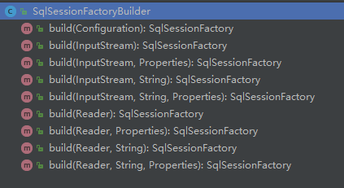
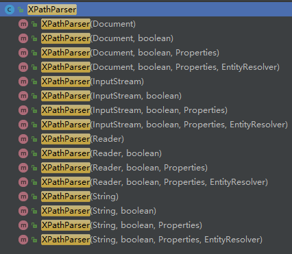
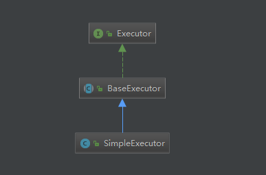

原文连接:https://www.cnblogs.com/ytao-blog/p/11756456.html

前言
MyBatis 作为目前最常用的持久层框架之一，分析其源码，对我们的使用过程中可更好的运用它。本系列基于mybatis-3.4.6进行分析。
MyBatis 的初始化工作就是解析主配置文件，映射配置文件以及注解信息。然后保存在org.apache.ibatis.session.Configuration，供后期执行数据请求的相关调用。
Configuration 里有大量配置信息，在后面每涉及到一个相关配置，会进行详细的分析。
启动
public static void main(String[] args) throws IOException {
// 获取配置文件
Reader reader = Resources.getResourceAsReader("mybatis-config.xml");
// 通过 SqlSessionFactoryBuilder 构建 sqlSession 工厂
SqlSessionFactory sqlSessionFactory = new SqlSessionFactoryBuilder().build(reader);
// 获取 sqlSession 实例
SqlSession sqlSession = sqlSessionFactory.openSession();
reader.close();
sqlSession.close();
}分析
SqlSessionFactoryBuilder 类
SqlSessionFactoryBuilder 的build()是Mybatis启动的初始化入口，使用builder模式加载配置文件。
通过查看该类，使用方法重载，有以下9个方法：

方法重载最终实现处理的方法源码如下：
public SqlSessionFactory build(Reader reader, String environment, Properties properties) {
try {
// 实例化 XMLConfigBuilder，用于读取配置文件信息
XMLConfigBuilder parser = new XMLConfigBuilder(reader, environment, properties);
// 解析配置信息，保存到 Configuration
return build(parser.parse());
} catch (Exception e) {
throw ExceptionFactory.wrapException("Error building SqlSession.", e);
} finally {
ErrorContext.instance().reset();
try {
reader.close();
} catch (IOException e) {
// Intentionally ignore. Prefer previous error.
}
}
}- environment 是指定加载环境，默认值为 null。
- properties 是属性配置文件，默认值为 null。
同时读取配置文件既可字符流读取，也支持字节流读取。
public SqlSessionFactory build(InputStream inputStream, String environment, Properties properties) {
try {
XMLConfigBuilder parser = new XMLConfigBuilder(inputStream, environment, properties);
return build(parser.parse());
} catch (Exception e) {
throw ExceptionFactory.wrapException("Error building SqlSession.", e);
} finally {
ErrorContext.instance().reset();
try {
inputStream.close();
} catch (IOException e) {
// Intentionally ignore. Prefer previous error.
}
}
}实例化 XMLConfigBuilder 类
通过 SqlSessionFactoryBuilder 中 XMLConfigBuilder parser = new XMLConfigBuilder(reader, environment, properties), 分析 XMLConfigBuilder实例化过程。
该类中有四个变量：
private boolean parsed;
private final XPathParser parser;
private String environment;
private final ReflectorFactory localReflectorFactory = new DefaultReflectorFactory();- parsed 是否解析，一次解析即可。用于标志配置文件只解析一次，
true为已解析过。 - parser 解析配置的解析器
- environment 加载环境，即
SqlSessionFactoryBuilder中的environment - localReflectorFactory 用于创建和缓存
Reflector对象，一个类对应一个Reflector。因为参数处理、结果映射等操作时，会涉及大量的反射操作。DefaultReflectorFactory实现类比较简单，这里不再进行讲解。
XMLConfigBuilder构建函数实现：
public XMLConfigBuilder(Reader reader, String environment, Properties props) {
this(new XPathParser(reader, true, props, new XMLMapperEntityResolver()), environment, props);
}实例化 XPathParser 对象
首先实例化 XPathParser 对象，里面定义了5个变量:
private final Document document;
private boolean validation;
private EntityResolver entityResolver;
private Properties variables;
private XPath xpath;- document 保存document对象
- validation xml解析时是否验证文档
- entityResolver 加载dtd文件
- variables 配置文件定义
的值 - xpath Xpath对象，用于对XML文件节点的操作
XPathParser 对象构造函数有：

函数里面都处理了两件事：
public XPathParser(Reader reader, boolean validation, Properties variables, EntityResolver entityResolver) {
commonConstructor(validation, variables, entityResolver);
this.document = createDocument(new InputSource(reader));
}- 初始化赋值，和创建
XPath对象，用于对XML文件节点的操作。
private void commonConstructor(boolean validation, Properties variables, EntityResolver entityResolver) {
this.validation = validation;
this.entityResolver = entityResolver;
this.variables = variables;
// 创建Xpath对象，用于对XML文件节点的操作
XPathFactory factory = XPathFactory.newInstance();
this.xpath = factory.newXPath();
}- 创建
Document对象并赋值到document变量, 这里属于Document创建的操作,不再详细讲述，不懂可以点击这里查看API
private Document createDocument(InputSource inputSource) {
// important: this must only be called AFTER common constructor
try {
// 实例化 DocumentBuilderFactory 对象，用于创建 DocumentBuilder 对象
DocumentBuilderFactory factory = DocumentBuilderFactory.newInstance();
// 是否校验文档
factory.setValidating(validation);
// 设置 DocumentBuilderFactory 的配置
factory.setNamespaceAware(false);
factory.setIgnoringComments(true);
factory.setIgnoringElementContentWhitespace(false);
factory.setCoalescing(false);
factory.setExpandEntityReferences(true);
// 创建 DocumentBuilder
DocumentBuilder builder = factory.newDocumentBuilder();
builder.setEntityResolver(entityResolver);
builder.setErrorHandler(new ErrorHandler() {
@Override
public void error(SAXParseException exception) throws SAXException {
throw exception;
}
@Override
public void fatalError(SAXParseException exception) throws SAXException {
throw exception;
}
@Override
public void warning(SAXParseException exception) throws SAXException {
}
});
// 加载文件
return builder.parse(inputSource);
} catch (Exception e) {
throw new BuilderException("Error creating document instance. Cause: " + e, e);
}
}XMLConfigBuilder构造函数赋值
private XMLConfigBuilder(XPathParser parser, String environment, Properties props) {
super(new Configuration());
ErrorContext.instance().resource("SQL Mapper Configuration");
this.configuration.setVariables(props);
this.parsed = false;
this.environment = environment;
this.parser = parser;
}- 初始化父类
BaseBuilder的值。 - 将外部值赋值给对象。
- 将实例化的
XPathParser赋值给parser。
最后返回XMLConfigBuilder对象。
解析 XMLConfigBuilder 对象
通过 XMLConfigBuilder.parse() 解析配置信息，保存至Configuration。解析详解在后面文章中进行分析。
public Configuration parse() {
// 是否解析过配置文件
if (parsed) {
throw new BuilderException("Each XMLConfigBuilder can only be used once.");
}
// 标志解析过，定义为 true
parsed = true;
// 解析 configuration 节点中的信息
parseConfiguration(parser.evalNode("/configuration"));
return configuration;
}创建 SqlSessionFactory
DefaultSqlSessionFactory实现了SqlSessionFactory接口。
通过上面解析得到的Configuration，调用SqlSessionFactoryBuilder.build(Configuration config)创建一个 DefaultSqlSessionFactory。
public SqlSessionFactory build(Configuration config) {
return new DefaultSqlSessionFactory(config);
}实例化DefaultSqlSessionFactory的过程，就是将Configuration传递给DefaultSqlSessionFactory成员变量configuration。
public DefaultSqlSessionFactory(Configuration configuration) {
this.configuration = configuration;
}创建 SqlSession
通过调用SqlSessionFactory.openSession()创建SqlSession。
public interface SqlSessionFactory {
// 默认创建
SqlSession openSession();
SqlSession openSession(boolean autoCommit);
SqlSession openSession(Connection connection);
SqlSession openSession(TransactionIsolationLevel level);
SqlSession openSession(ExecutorType execType);
SqlSession openSession(ExecutorType execType, boolean autoCommit);
SqlSession openSession(ExecutorType execType, TransactionIsolationLevel level);
SqlSession openSession(ExecutorType execType, Connection connection);
Configuration getConfiguration();
}- autoCommit 是否自动提交事务，
- level 事务隔离级别（共5个级别）， 可查看相关源码
- connection 连接
- execType 执行器的类型：
SIMPLE(不做特殊处理),REUSE（复用预处理语句）,BATCH（会批量执行）
因为上面DefaultSqlSessionFactory实现了SqlSessionFactory接口，所以进入到DefaultSqlSessionFactory查看openSession()。
public SqlSession openSession() {
return openSessionFromDataSource(configuration.getDefaultExecutorType(), null, false);
}openSession()方法最终实现代码如下：
private SqlSession openSessionFromDataSource(ExecutorType execType, TransactionIsolationLevel level, boolean autoCommit) {
Transaction tx = null;
try {
// 获取configuration中的加载环境
final Environment environment = configuration.getEnvironment();
// 获取事务工厂
final TransactionFactory transactionFactory = getTransactionFactoryFromEnvironment(environment);
// 创建一个事务
tx = transactionFactory.newTransaction(environment.getDataSource(), level, autoCommit);
// 生成一个处理器，事务保存在处理器 BaseExecutor 中
final Executor executor = configuration.newExecutor(tx, execType);
// 实例化一个 DefaultSqlSession，DefaultSqlSession实现了SqlSession接口
return new DefaultSqlSession(configuration, executor, autoCommit);
} catch (Exception e) {
// 异常情况下关闭事务
closeTransaction(tx); // may have fetched a connection so lets call close()
throw ExceptionFactory.wrapException("Error opening session. Cause: " + e, e);
} finally {
// 充值错误实例上下文
ErrorContext.instance().reset();
}
}生成处理器Configuration.newExecutor(Transaction transaction, ExecutorType executorType)：
public Executor newExecutor(Transaction transaction, ExecutorType executorType) {
// 默认为 ExecutorType.SIMPLE
executorType = executorType == null ? defaultExecutorType : executorType;
executorType = executorType == null ? ExecutorType.SIMPLE : executorType;
Executor executor;
if (ExecutorType.BATCH == executorType) {
executor = new BatchExecutor(this, transaction);
} else if (ExecutorType.REUSE == executorType) {
executor = new ReuseExecutor(this, transaction);
} else {
executor = new SimpleExecutor(this, transaction);
}
if (cacheEnabled) {
executor = new CachingExecutor(executor);
}
executor = (Executor) interceptorChain.pluginAll(executor);
return executor;
}以ExecutorType.SIMPLE为例, BatchExecutor, ReuseExecutor同理：

至此，mybatis的启动流程大致简单的介绍到这里，对mybatis的启动初始化有个大致了解。接下将会针对单独模块进行详细分析。
个人博客： https://ytao.top
我的公众号 ytao